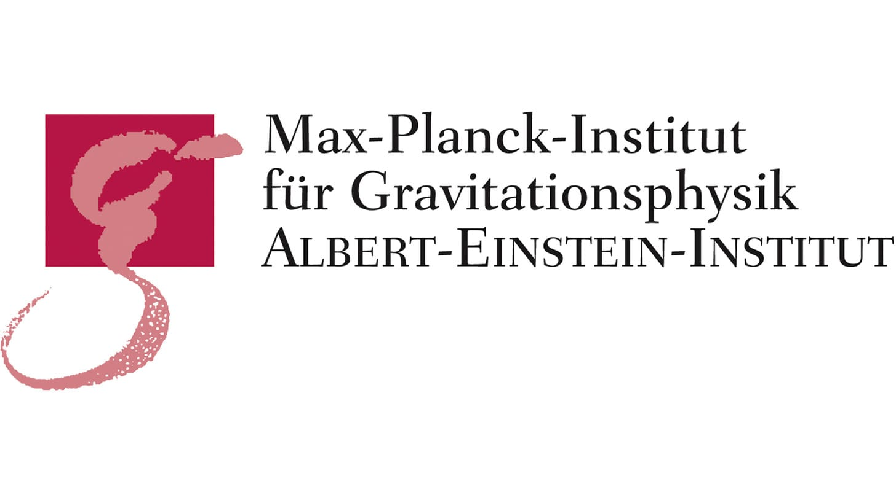
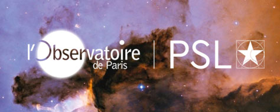

Academic timeline
07/17
Undergraduate studies in mechanical engineering. Worked on using machine learning in various aspects of astronomy - Parameter Estimation of GWs, Predicting Galaxy merger events, and Parameter Estimation of Interacting Galaxies.
05/19
Research internship: Worked on studying the effects of Synthetic Jet Impingement and its application. Worked on the thermal performance as well as variation due to waveform.
06/20

Research internship: Worked development of LISA module for PyCBC.
09/21
Master in Fundamental Physics and Aplication. Worked on developing tools to study GW lensing
07/22
Research internship: Worked on studying the effect of inclusion of higher modes on premerger detection of GWs.
09/22

Master in Astrophysics
09/22
Worked on waveform compression of EMRIs using Singular Value Decomposition.
02/23
Master Thesis: Worked on exploring dark sectore using GW lensing
10/23
PhD : Working on population inference using GWs. Since GWs can travel without much dissipation and with new set of detectors one can expect to explore larger volume of the Universe, it is in principle possible to know some trends about the population of these compact objects.